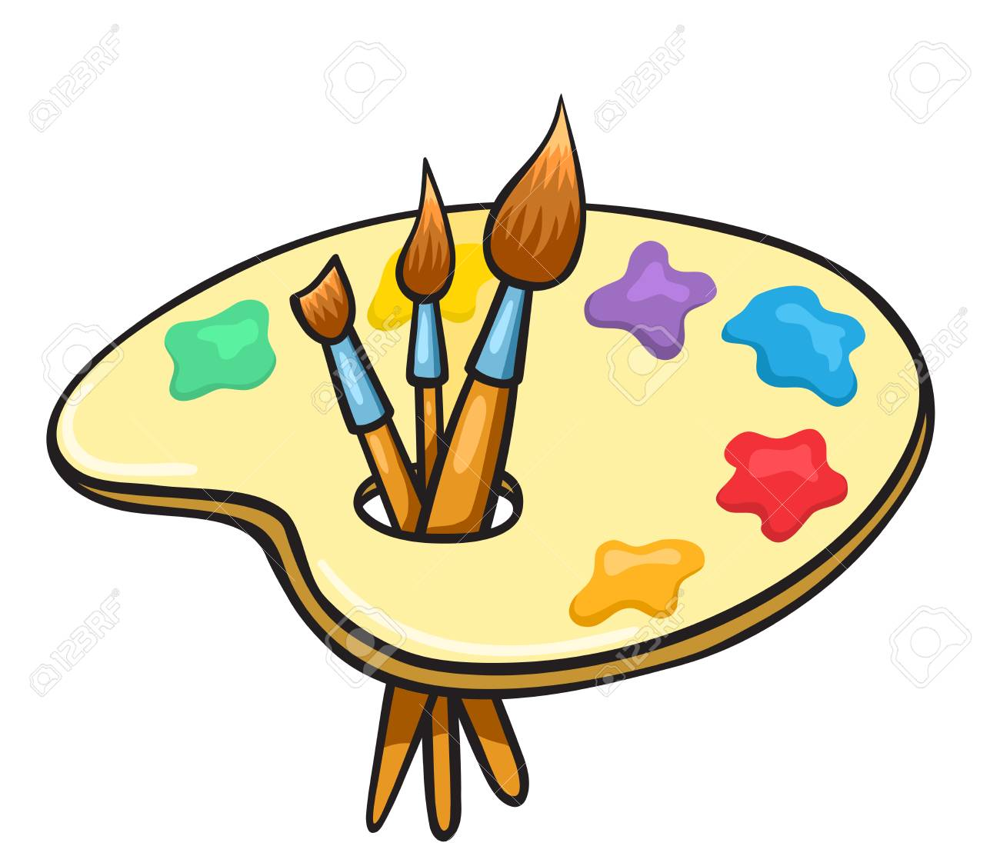

Mathematicians seek and use patterns[8][9] to formulate new conjectures; they resolve the truth or falsity of such by mathematical proof. When mathematical structures are good models of real phenomena, mathematical reasoning can be used to provide insight or predictions about nature. Through the use of abstraction and logic, mathematics developed from counting, calculation, measurement, and the systematic study of the shapes and motions of physical objects. Practical mathematics has been a human activity from as far back as written records exist. The research required to solve mathematical problems can take years or even centuries of sustained inquiry. Rigorous arguments first appeared in Greek mathematics, most notably in Euclid's Elements.[10] Since the pioneering work of Giuseppe Peano (1858–1932), David Hilbert (1862–1943), and others on axiomatic systems in the late 19th century, it has become customary to view mathematical research as establishing truth by rigorous deduction from appropriately chosen axioms and definitions. Mathematics developed at a relatively slow pace until the Renaissance, when mathematical innovations interacting with new scientific discoveries led to a rapid increase in the rate of mathematical discovery that has continued to the present day.

A computer is a machine that can be programmed to carry out sequences of arithmetic or logical operations automatically. Modern computers can perform generic sets of operations known as programs. These programs enable computers to perform a wide range of tasks. A computer system is a "complete" computer that includes the hardware, operating system (main software) , and peripheral equipment needed and used for "full" operation. This term may also refer to a group of computers that are linked and function together, such as a computer network or computer cluster. A broad range of industrial and consumer products use computers as control systems. Simple special-purpose devices like microwave ovens and remote controls are included, as are factory devices like industrial robots and computer-aided design, as well as general-purpose devices like personal computers and mobile devices like smartphones. Computers power the Internet, which links hundreds of millions of other computers and users.
In the perspective of the history of art,artistic works have existed for almost as long as humankind: from early pre-historic art to contemporary art; however, some theorists feel that the typical concept of "artistic works" fits less well outside modern Western societies.[11] One early sense of the definition of art is closely related to the older Latin meaning, which roughly translates to "skill" or "craft," as associated with words such as "artisan." English words derived from this meaning include artifact, artificial, artifice, medical arts, and military arts. However, there are many other colloquial uses of the word, all with some relation to its etymology. 20th-century bottle, Twa peoples, Rwanda, Artistic works may serve practical functions, in addition to their decorative value.Over time, philosophers like Plato, Aristotle, Socrates and Kant, among others, questioned the meaning of art.[12] Several dialogues in Plato tackle questions about art: Socrates says that poetry is inspired by the muses, and is not rational. He speaks approvingly of this, and other forms of divine madness (drunkenness, eroticism, and dreaming) in the Phaedrus (265a–c), and yet in the Republic wants to outlaw Homer's great poetic art, and laughter as well. In Ion, Socrates gives no hint of the disapproval of Homer that he expresses in the Republic. The dialogue Ion suggests that Homer's Iliad functioned in the ancient Greek world as the Bible does today in the modern Christian world: as divinely inspired literary art that can provide moral guidance, if only it can be properly interpreted.[13] With regards to the literary art and the musical arts, Aristotle considered epic poetry, tragedy, comedy, Dithyrambic poetry and music to be mimetic or imitative art, each varying in imitation by medium, object, and manner.[14] For example, music imitates with the media of rhythm and harmony, whereas dance imitates with rhythm alone, and poetry with language. The forms also differ in their object of imitation.